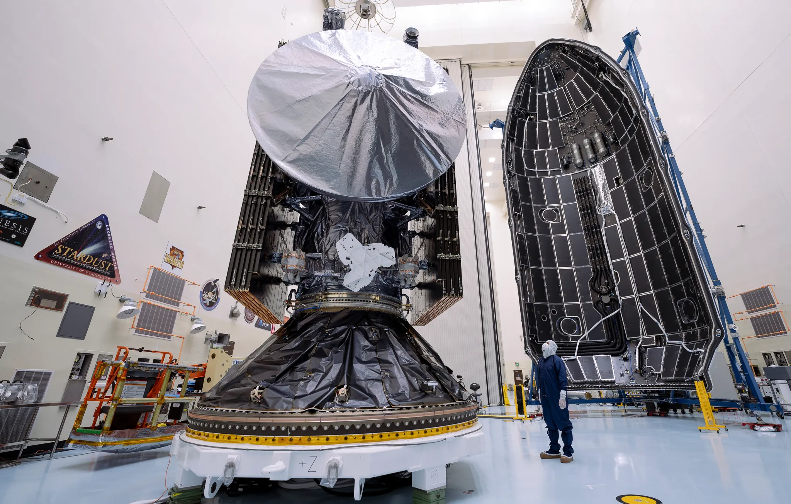
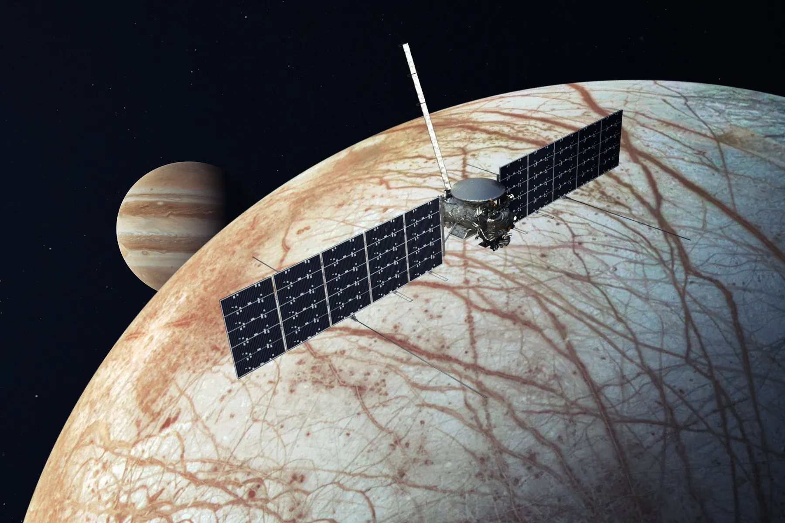
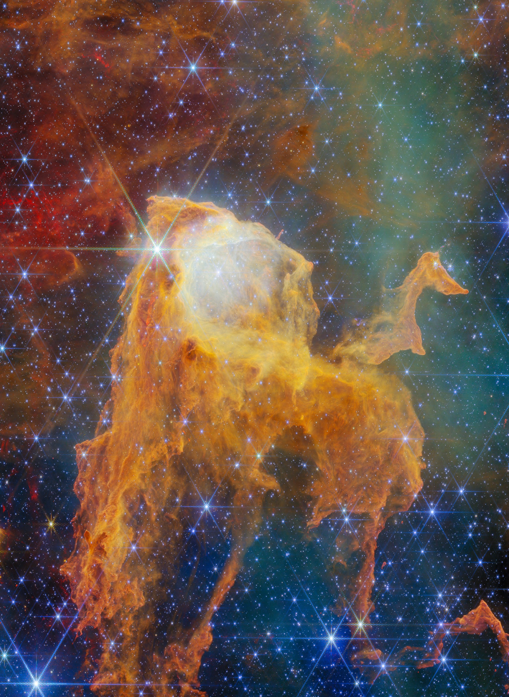
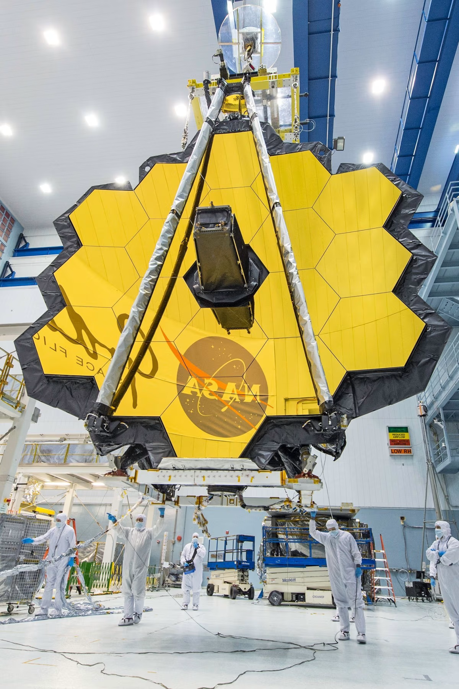

La mission Europa Clipper : à la recherche de vie extraterrestre dans les océans de Jupiter
Lucas Moreau le 20 octobre 2025
La sonde Europa Clipper, lancée le 10 octobre 2024, atteindra Jupiter en avril 2030 pour une mission de quatre ans. Son objectif : étudier Europe, l’une des lunes glacées de Jupiter, où des océans cachés sous une épaisse couche de glace pourraient abriter des conditions propices à la vie. Découvrez les enjeux de cette exploration et ce qu’elle pourrait révéler sur notre place dans l’univers.
La sonde Europa Clipper, lancée le 10 octobre 2024, mettra près de six ans à atteindre Jupiter. Une fois sur place, elle effectuera 45 survols rapprochés d’Europe entre 2030 et 2034, analysant sa surface glacée et son océan souterrain à l’aide de neuf instruments scientifiques.
Les scientifiques pensent que cet océan, chauffé par les forces de marée exercées par Jupiter, pourrait contenir des ingrédients essentiels à la vie, comme de l’eau liquide, des sels minéraux, et une source d’énergie.
Des instruments de pointe
La sonde est équipée de neuf instruments scientifiques, dont des caméras haute résolution, des spectromètres pour analyser la composition de la surface, et un radar capable de percer la glace pour étudier la structure de l’océan sous-jacent. L’un des objectifs principaux est de cartographier la surface d’Europe et d’identifier les zones où l’océan pourrait être le plus proche de la surface, facilitant ainsi de futures missions d’exploration.
Un environnement extrême
Europe est soumise à un environnement radiatif intense en raison de sa proximité avec Jupiter. Pour résister à ces conditions, la sonde est dotée d’un bouclier anti-radiation et effectuera des survols rapides pour limiter son exposition. Malgré ces défis, les données recueillies pourraient révolutionner notre compréhension des mondes océaniques et de leur potentiel à abriter la vie.
Et après ?
Si Europa Clipper confirme la présence de conditions favorables à la vie, la prochaine étape pourrait être l’envoi d’un atterrisseur pour analyser directement le matériau de surface, voire forer la glace pour accéder à l’océan. Une telle mission, bien que complexe, ouvrirait la voie à une nouvelle ère dans la recherche de vie extraterrestre.

Des technicien·ne·s se préparent à encapsuler le vaisseau spatial Europa Clipper de la NASA dans la coiffe de la fusée Falcon Heavy de SpaceX, au centre spatial Kennedy en Floride, le mercredi 2 octobre 2024. Photo © NASA Kennedy Space Center, 2024

La sonde, lancée le 10 octobre 2024, mettra près de six ans à atteindre Jupiter. Une fois sur place, elle effectuera 45 survols rapprochés d’Europe entre 2030 et 2034, analysant sa surface glacée et son océan souterrain à l’aide de neuf instruments scientifiques. Photo © NASA
Le télescope James Webb révèle les premières galaxies de l’univers
Lucas Moreau le 18 janvier 2026
Grâce à ses observations sans précédent, le télescope spatial James Webb a capturé les images des premières galaxies apparues après le Big Bang. Cette avancée majeure permet aux scientifiques d’explorer les origines de l’univers avec une précision inédite et pourrait bouleverser notre compréhension de la formation des structures cosmiques.
Une fenêtre ouverte sur les origines du cosmos
Depuis son lancement, le télescope spatial James Webb ne cesse de repousser les limites de notre compréhension de l’univers. Aujourd’hui, une nouvelle série d’observations marque une étape historique : les astronomes ont réussi à capturer les images les plus détaillées jamais obtenues des premières galaxies formées après le Big Bang.
Ces galaxies, âgées de plus de 13 milliards d’années, apparaissent telles qu’elles existaient lorsque l’univers n’avait que quelques centaines de millions d’années. Grâce à ses instruments infrarouges ultra-sensibles, James Webb est capable de détecter une lumière ayant voyagé pendant des milliards d’années avant d’atteindre nos télescopes.
Des découvertes qui remettent en question les modèles actuels
Les chercheurs ont été surpris par la taille et la complexité de certaines de ces galaxies primitives. Selon les théories actuelles, les premières structures cosmiques devaient être relativement petites et désorganisées. Pourtant, plusieurs objets observés semblent déjà présenter des formes élaborées et une activité de formation stellaire intense.
« Ces résultats nous obligent à revoir certaines hypothèses sur les débuts de l’univers », explique la cosmologiste Élodie Martin, membre de l’équipe internationale ayant analysé les données. « Nous découvrons que les galaxies ont peut-être évolué beaucoup plus rapidement que ce que nous pensions. »
Comment James Webb voit l’invisible
Contrairement au télescope Hubble, qui observe principalement dans le spectre visible et ultraviolet, James Webb se spécialise dans l’infrarouge. Cette technologie lui permet de traverser les nuages de poussière cosmique et d’observer des objets extrêmement éloignés.
Son miroir principal de 6,5 mètres de diamètre collecte une quantité de lumière sans précédent. Associé à des capteurs de dernière génération, il offre une précision suffisante pour détecter des galaxies datant des premières phases de l’histoire cosmique.
Une avancée majeure pour la science
Ces nouvelles données pourraient permettre aux chercheurs de mieux comprendre comment la matière s’est organisée après le Big Bang, comment les premières étoiles sont apparues et comment les grandes structures de l’univers se sont développées au fil du temps.
Les observations recueillies au cours des prochains mois devraient fournir encore davantage d’informations sur cette période mystérieuse appelée « l’aube cosmique », considérée comme l’une des étapes les plus importantes de l’évolution de l’univers.
Et maintenant ?
Les équipes scientifiques du monde entier poursuivent l’analyse des images transmises par le télescope. De nouvelles campagnes d’observation sont déjà programmées afin de cartographier d’autres régions profondes du cosmos et d’identifier des objets encore plus anciens.
Chaque nouvelle découverte rapproche les astronomes d’une question fondamentale : comment notre univers est-il né et comment est-il devenu celui que nous observons aujourd’hui ?

Des technicien·ne·s se préparent à encapsuler le vaisseau spatial Europa Clipper de la NASA dans la coiffe de la fusée Falcon Heavy de SpaceX, au centre spatial Kennedy en Floride, le mercredi 2 octobre 2024. Photo © NASA Kennedy Space Center, 2024

La sonde, lancée le 10 octobre 2024, mettra près de six ans à atteindre Jupiter. Une fois sur place, elle effectuera 45 survols rapprochés d’Europe entre 2030 et 2034, analysant sa surface glacée et son océan souterrain à l’aide de neuf instruments scientifiques. Photo © NASA